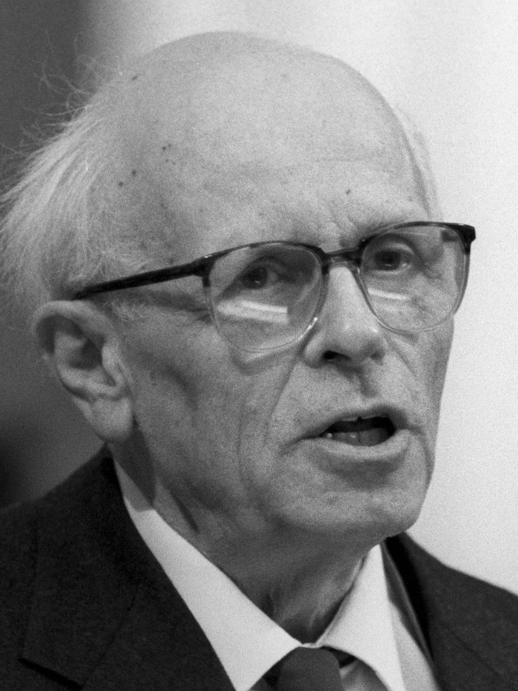
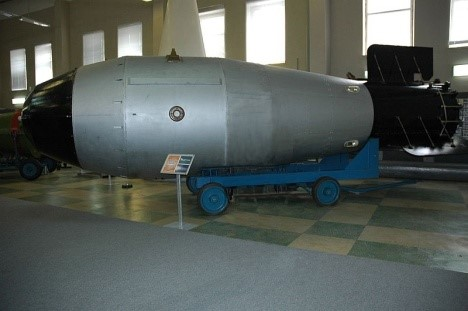
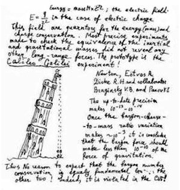
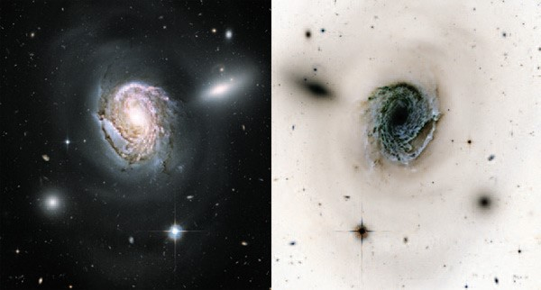
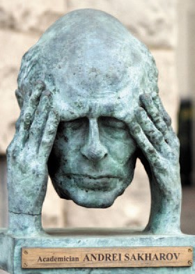
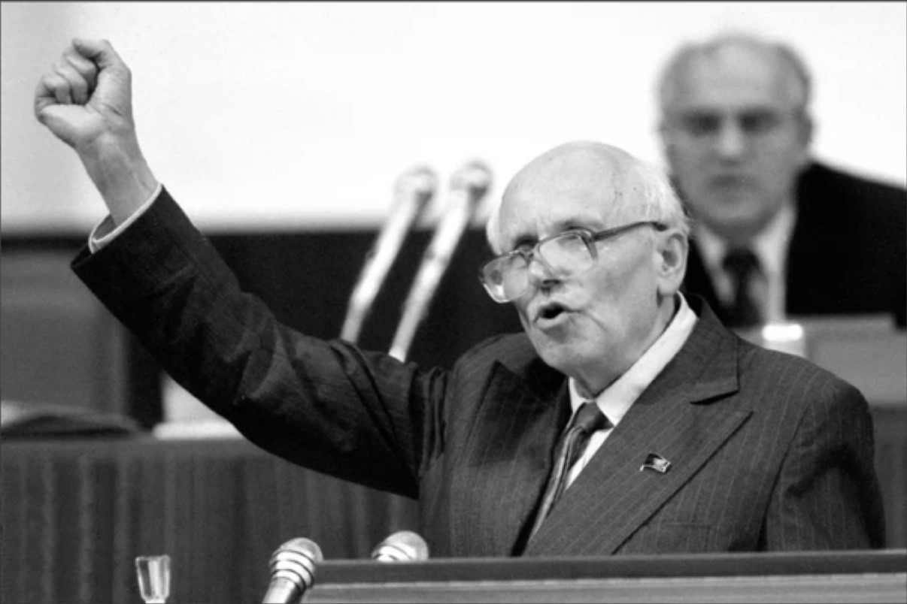
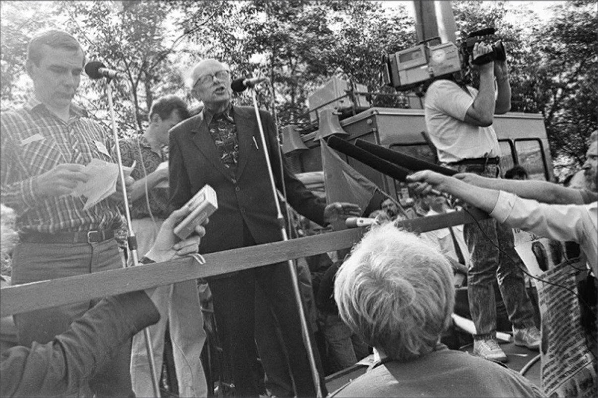

Деятельность в ядерной промышленности:
В
КБ-11 (
Саров) группа
Тамма, включая
Харитона и
Зельдовича,
разрабатывала водородную бомбу (
1950
-
1953
).
Ключевой стала
“слойка Сахарова”, усиливающая термоядерную реакцию. Чередующиеся слои
дейтерия
и
урана-238 в
плотной
урановой оболочке позволяли существенно повысить концентрацию и температуру дейтерия, а,
значит,
осуществить термоядерную реакцию.
После успешного испытания
РДС-6с (
12.08.1953
)
Сахаров стал
академиком,
Героем Соцтруда и до
1968
года
работал над атомной подлодкой и
“царь-бомбой”.
С
1960-х
Сахаров изучал
космологию и стал правозащитником, отказавшись от членства в партии. Его пацифизм
вызвал конфликт с
Хрущёвым, после чего ядерные испытания были
ограничены.

Деятельность в космологии:
Сахаров известен как создатель
водородной бомбы и общественный деятель, но мало кто знает о его вкладе в
фундаментальную науку. Хотя его вклад не очень велик по количеству, в ряде работ он опередил время, задав
направления для будущих исследований.
«В нашей Галактике антивещества в заметных количествах нет. Иначе, оно бы дало о себе знать, аннигилируя
с
веществом. Его также нет в Местной группе галактик. Вообще можно сказать, что антивещество в той форме,
в которой находится вещество, в наблюдаемой Вселенной практически отсутствует. В любом случае,
теоретически невозможно объяснить разделение вещества и антивещества на «острова» во Вселенной. Поэтому
существует консенсус по поводу того, что Вселенная содержит только вещество (за исключением небольшой
части космических лучей, рождающейся при взаимодействиях частиц высокой энергии). Таким образом, наша
Вселенная зарядово несимметрична, чему мы должны быть благодарны: нам не грозит встреча и аннигиляция с
антиматерией.»



Позиция о неприменимости ядерного оружия:
В основу разработки термоядерного заряда легли зарубежные данные, но
Сахаров предложил принципиально новый
проект, дополненный исследованиями
Гинзбурга. После успешного испытания водородной бомбы
12 августа 1953
года
Сахаров сразу стал
академиком и
Героем Соцтруда (вместе с
Таммом), а группа получила
Сталинскую премию.
В
1955
году была испытана улучшенная бомба, но
Сахаров начал задумываться о последствиях ядерных испытаний.
В
1958
году он опубликовал статью о радиоактивном
заражении, призывая к остановке испытаний, защищал школы и
генетику.
Хрущев обвинил его во вмешательстве
“не в свое дело”, но в
1963
году был подписан договор о
запрете испытаний в
3-x средах.
«Главным для меня было внутреннее убеждение, что эта работа необходима. Чудовищная разрушительная
сила, огромные усилия, необходимые для разработки, средства, отнимаемые у нищей и голодной,
разрушенной войной страны, человеческие жертвы на вредных производствах и в каторжных лагерях
принудительного труда — все это эмоционально усиливало чувство трагизма, заставляло думать и
работать так, чтобы все жертвы (подразумевавшиеся неизбежными) были не напрасными. Моя самая
страстная мечта — чтобы термоядерное оружие сдерживало войну, но никогда не применялось.»

